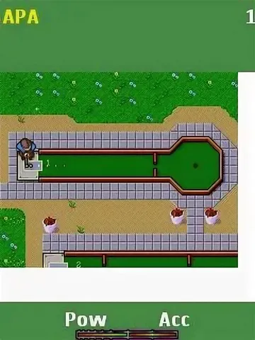

Представим себе, что у нас есть далекая цель. Такая, что с наскоку, одним ударом, не добить. Можно разбить достижение на N промежуточных шагов. Но приходится на каждом шаге убеждаться, что он приближает нас к цели. Даже в первом таком шаге не будет уверенности, если он короткий и осторожный.
А можно сразу лупануть как можно дальше в сторону цели. И, понимая, что вероятность попасть с первого раза ничтожно мала, мы все равно сразу метим в цель. Пусть лучше мы, промазав, сделаем еще N-1 шагов, чтобы уже попасть точно в лунку, зато с небольшой дистанции целиться будет уже проще.
В общем, первый удар нужно делать сразу в сторону лунки, да посмелее. Ну как минимум я стратегию гольфа так представляю. Впрочем, в гольф я в последний раз играл как раз в тот, что на иллюстрации к этому посту (олды тут?). Так что за точность спортивных метафор не ручаюсь, но вы меня поняли.
